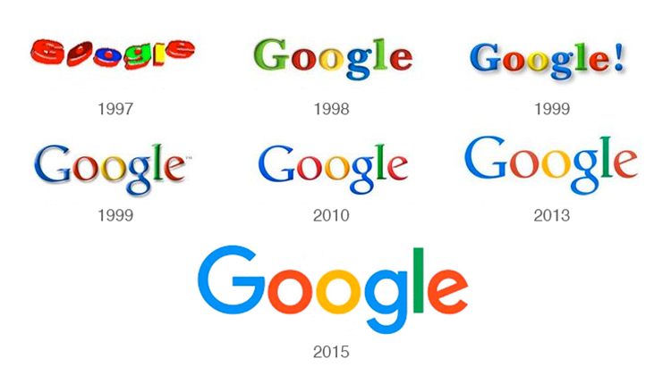

Google es una compañía, principal subsidiaria de la multinacional estadounidense Alphabet Inc., especializada en productos y servicios relacionados con Internet, software, dispositivos y otras tecnologías. El principal producto de Google es el motor de búsqueda de contenido en Internet del mismo nombre aunque ofrece también otros productos y servicios como el correo electrónico llamado Gmail, sus servicios de mapas Google Maps y Google Earth, el sitio web de vídeos YouTube y otras utilidades web como Google Libros o Google Noticias, Google Chrome y la social Google+. Por otra parte, lidera el desarrollo del sistema operativo basado en Linux, Android, orientado a teléfonos inteligentes, tabletas, televisores y automóviles y en gafas de realidad aumentada, las Google Glass. Con más de un millón de servidores y centros de datos presentes en todo el mundo, Google es capaz de procesar más de 1000 millones de peticiones de búsqueda diarias y su motor de búsqueda es el sitio web más visitado a nivel mundial tal como muestra el ranking web internacional. Entre los servicios más populares de Google más allá del buscador, se encuentran Gmail (correo electrónico), Google Maps, AdSense (sistema de publicidad online), YouTube (portal de videos adquirido en 2006) y Google Play Store (para descargarse distintas apps, canciones o juegos, en los smartphones con sistema operativo Android). Un dato curioso, es que el término Google tiene origen en la matemática, google viene de “gúgol”, que es el número 10100, es decir, el dígito 1 seguido de cien ceros. El “gúgol” tiene poca utilidad, sólo para explicar la diferencia entre un gran número y el infinito, y debido a su magnitud, los fundadores de Google decidieron adaptar el término para dar nombre a su empresa.